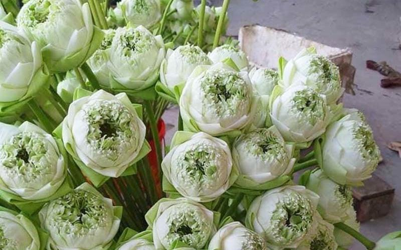
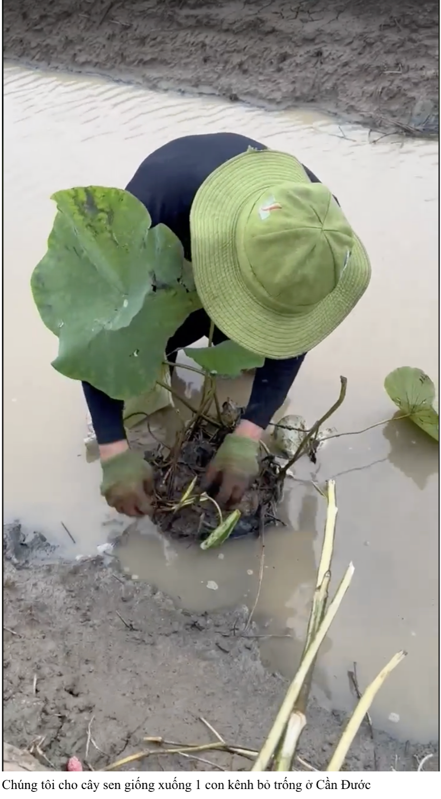
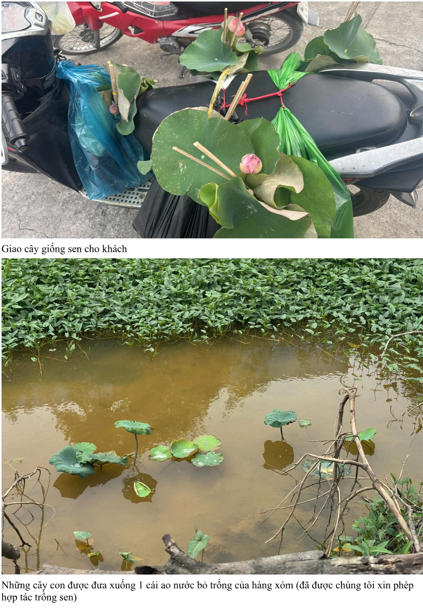
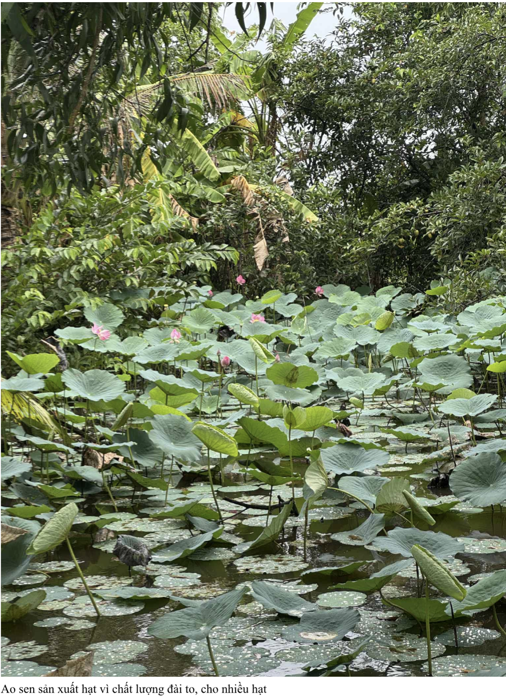
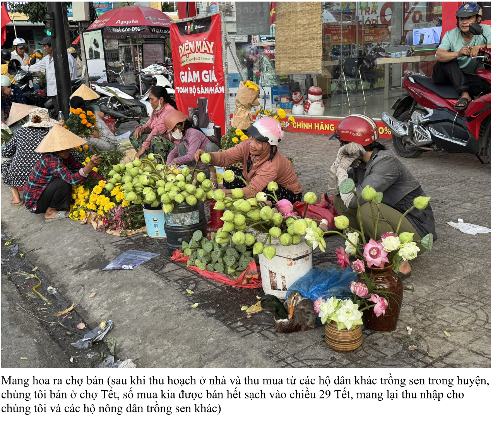
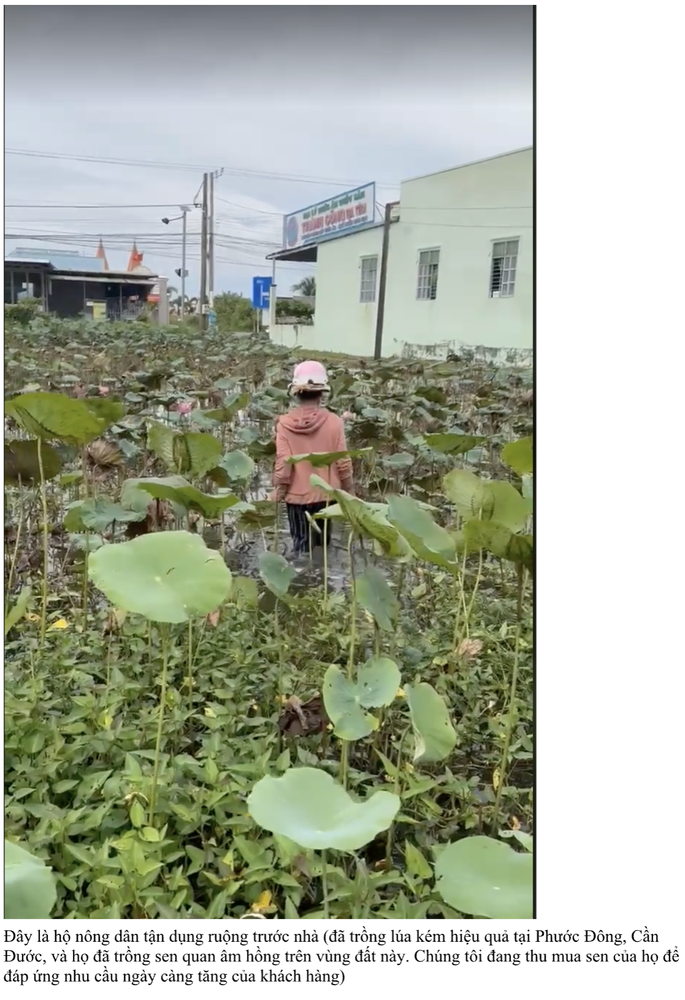

🍃 Lá Sen Tươi
Dùng gói xôi, hấp thực phẩm và trang trí món ăn.
30.000 VNĐ/kg

Màu trắng tinh khiết, cánh đều đẹp.

Màu hồng đậm, rất được ưa chuộng.

Giống sen độc đáo, hoa lớn và bền.
Ngoài hoa sen, chúng tôi còn cung cấp nhiều sản phẩm khác từ cây sen phục vụ nhu cầu ẩm thực, trà thảo mộc, trang trí và cây giống.
Dùng gói xôi, hấp thực phẩm và trang trí món ăn.
Dùng pha trà, làm dược liệu và thảo mộc.
Dùng cắm hoa, trang trí và thu hoạch hạt sen tươi.
Nguyên liệu chế biến các món gỏi và ẩm thực.
Thực phẩm bổ dưỡng, chế biến nhiều món ăn.
Chậu sen giống khỏe mạnh, dễ chăm sóc.
Dùng làm ống hút sinh học thân thiện với môi trường và các sản phẩm thủ công.
Thực phẩm bổ dưỡng, dùng nấu chè, hầm thuốc bắc và nhiều món ăn khác.
Từ những dòng kênh bỏ hoang đến mô hình sinh kế bền vững cho cộng đồng nông dân Cần Đước.
Tôi sinh ra và lớn lên ở một vùng quê thuộc huyện Cần Đước, tỉnh Long An. Giống như nhiều người trẻ khác, tôi từng đứng trước lựa chọn rời quê hương để tìm kiếm những cơ hội tốt hơn ở thành phố. Nhưng càng trưởng thành, tôi càng nhận ra rằng điều khiến tôi trăn trở không phải là làm thế nào để bản thân tiến xa hơn, mà là làm thế nào để nơi mình sinh ra có thể phát triển tốt hơn.
Nhiều năm qua, tôi chứng kiến những đổi thay của quê hương dưới tác động của biến đổi khí hậu. Những cánh đồng từng màu mỡ bắt đầu chịu ảnh hưởng bởi hạn hán, xâm nhập mặn và đất phèn. Nhiều diện tích sản xuất kém hiệu quả dần bị bỏ hoang. Dọc những tuyến kênh quê nhà, tôi nhìn thấy những khoảng mặt nước rộng lớn gần như không được khai thác trong khi không ít người rời quê tìm hướng đi mới để cải thiện thu nhập.
Điều đó khiến tôi luôn tự hỏi: liệu những gì đang bị xem là khó khăn có thực sự chỉ là khó khăn? Hay trong đó vẫn còn những cơ hội mà chúng ta chưa nhìn thấy?
Từ suy nghĩ ấy, tôi bắt đầu tìm hiểu và thử nghiệm trồng giống sen nghìn cánh Quan Âm trên những con kênh chứa nước trồng lúa. Những ngày đầu là chuỗi thất bại liên tiếp. Sen non bị cua và ốc phá hoại, không hợp với đất và nước, nhiều diện tích phải trồng lại nhiều lần. Có thời điểm tôi gần như mất toàn bộ công sức đã bỏ ra. Nhưng thay vì xem đó là dấu chấm hết, tôi coi đó là một phần của hành trình học hỏi. Tôi tin rằng nếu một loại cây có thể thích nghi với điều kiện tự nhiên khắc nghiệt của địa phương, nó sẽ mở ra cơ hội cho rất nhiều người khác chứ không riêng gì tôi.
Khi những bông sen đầu tiên nở trên con kênh trước nhà, điều tôi cảm nhận được không chỉ là niềm vui của một người làm nông. Tôi nhìn thấy khả năng hồi sinh của những vùng đất tưởng chừng đã mất đi giá trị. Tôi nhìn thấy cơ hội để biến những nguồn lực đang bị lãng phí thành sinh kế mới cho cộng đồng. Và hơn hết, tôi nhìn thấy một hướng đi mà người trẻ ở nông thôn có thể lựa chọn để phát triển quê hương thay vì rời bỏ nó.
Từ việc trồng sen, tôi tiếp tục nghiên cứu cách tạo ra nhiều giá trị hơn từ cùng một nguồn tài nguyên. Tôi nhận ra rằng một cây sen không chỉ cho hoa. Hoa sen phục vụ thị trường hoa tươi, lá sen có thể làm trà thảo mộc, ngó sen và củ sen trở thành thực phẩm, thân sen làm ống hút, cây sen con có thể cung cấp cho thị trường cây cảnh. Điều đó giúp gia tăng giá trị kinh tế đồng thời giảm thiểu sự lãng phí trong sản xuất nông nghiệp. Nhưng điều quan trọng hơn cả là mô hình này tạo ra niềm tin rằng ngay trên những vùng đất khó khăn nhất vẫn có thể hình thành những cơ hội mới nếu chúng ta đủ kiên trì để thực hiện.
Khi mô hình bắt đầu cho kết quả tích cực, tôi không muốn giữ những kinh nghiệm ấy cho riêng mình. Tôi bắt đầu chia sẻ giống sen, kỹ thuật chăm sóc và những bài học thực tế với các hộ dân trong khu vực có đất trũng, ao bỏ hoang hoặc những tuyến kênh chưa được khai thác hiệu quả. Tôi hiểu rằng điều khiến người nông dân e ngại nhất khi chuyển đổi không phải là công sức bỏ ra mà là nỗi lo về đầu ra sản phẩm. Vì vậy, bên cạnh việc hỗ trợ kỹ thuật, tôi cũng cố gắng kết nối thị trường và đồng hành cùng bà con trong quá trình sản xuất và kinh doanh.
Niềm vui lớn nhất của tôi không phải là những đơn hàng hoa sen ngày càng nhiều. Niềm vui lớn nhất là khi nhìn thấy những người nông dân bắt đầu tin tưởng hơn vào chính mảnh đất của mình. Có những khu vực từng bị bỏ không nhiều năm nay đã phủ kín màu xanh của sen. Có những hộ dân trước đây không còn nhiều kỳ vọng vào sản xuất nông nghiệp nay đã mạnh dạn đầu tư và gắn bó trở lại với ruộng vườn, mang về thu nhập gấp ba bốn lần trước kia. Mỗi lần nhìn thấy những thay đổi đó, tôi cảm thấy những nỗ lực của mình thực sự có ý nghĩa.
Tôi luôn nghĩ rằng sống đẹp không nhất thiết phải bắt đầu từ những điều lớn lao. Đôi khi sống đẹp đơn giản là nhìn thấy một khó khăn của cộng đồng và chọn cách hành động thay vì đứng ngoài quan sát. Là khi mình có một cơ hội và sẵn sàng chia sẻ cơ hội đó với người khác. Là khi mình thành công ở một mức độ nào đó nhưng vẫn mong muốn những người xung quanh cùng phát triển. Với tôi, giá trị của một mô hình không nằm ở việc nó tạo ra bao nhiêu doanh thu mà nằm ở việc nó có thể tạo ra bao nhiêu tác động tích cực cho cộng đồng.
Trong thời gian tới, tôi mong muốn tiếp tục mở rộng mô hình sen theo hướng kinh tế tuần hoàn kết hợp du lịch trải nghiệm nông nghiệp. Tôi hy vọng những con kênh, những vùng đất thấp và những diện tích mặt nước đang bị bỏ quên có thể trở thành nơi tạo ra sinh kế, tạo ra trải nghiệm và tạo ra niềm tự hào cho người dân địa phương. Tôi cũng mong rằng câu chuyện của mình có thể truyền thêm động lực cho những người trẻ ở nông thôn dám bắt đầu từ những điều nhỏ bé, dám tin vào giá trị của quê hương và dám lựa chọn ở lại để đóng góp.
Tôi không nghĩ mình là người tạo ra những điều phi thường. Tôi chỉ là một người trẻ yêu quê hương và tin rằng mỗi vùng đất đều có cơ hội phát triển theo cách riêng của nó. Nếu hôm nay những con kênh từng bị bỏ quên đã có thể nở đầy hoa sen, thì tôi tin rằng bất kỳ cộng đồng nào cũng có thể thay đổi khi có những con người sẵn sàng hành động vì lợi ích chung.
Có lẽ điều đẹp nhất mà cây sen mang lại cho tôi không phải là những bông hoa. Điều đẹp nhất là cơ hội được kết nối với cộng đồng, được góp một phần nhỏ vào sự phát triển của quê hương và được chứng kiến niềm hy vọng nở rộ trên chính những vùng đất từng bị lãng quên. Đó cũng là cách tôi lựa chọn để sống đẹp: bắt đầu từ nơi mình sinh ra, kiên trì với điều mình tin tưởng và lan tỏa những giá trị tích cực đến những người xung quanh.

Cho cây sen giống xuống dòng kênh bỏ trống tại Cần Đước.

Giao cây giống sen cho khách hàng và các hộ dân hợp tác.

Những cây sen đầu tiên phát triển trên ao nước từng bị bỏ hoang.

Sen vẫn phát triển mạnh trên nguồn nước ô nhiễm và kém hiệu quả sản xuất.

Thu mua hoa sen từ hộ dân liên kết để cung cấp cho thị trường.

Một hộ dân tại Phước Đông chuyển đổi từ trồng lúa kém hiệu quả sang trồng sen.